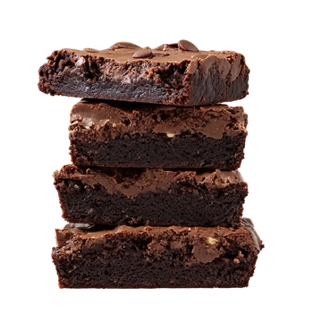

Brownie
Home

Description
This simple, fudgy brownies recipe might be the best you have ever tried.
Fattening but worth it!.
These brownies can be frozen after baking.
Ingredients
- 1 ½ cups unsalted butter
- 3 cups white sugar
- 2 teaspoons vanilla extract
- 7 eggs, beaten
- 1 ¼ cups all-purpose flour
- 1 ¼ cups unsweetened cocoa powder
- 1 teaspoon salt
- 1 pound chopped walnuts
-
Preheat oven to 350 degrees F (175 degrees C). Line one 9x9-inch baking
pan with foil and spray with cooking spray.
-
In a saucepan over medium-heat, melt butter. Stir in sugar until
dissolved. Remove mixture from heat. Gradually pour melted butter into
beaten eggs, whisking constantly, until mixture is fully incorporated.
Stir in vanilla.
-
Sift flour, cocoa, and salt together. Add flour mixture to butter
mixture, mixing until combined. Stir in walnuts. Spread batter into the
prepared pan.
-
Bake in preheated oven until brownies are set (a toothpick inserted in
the center should have small crumbs clinging to it, rather than wet
batter), 45 to 50 minutes. Do not overbake!
OriginalRecipe